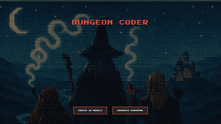
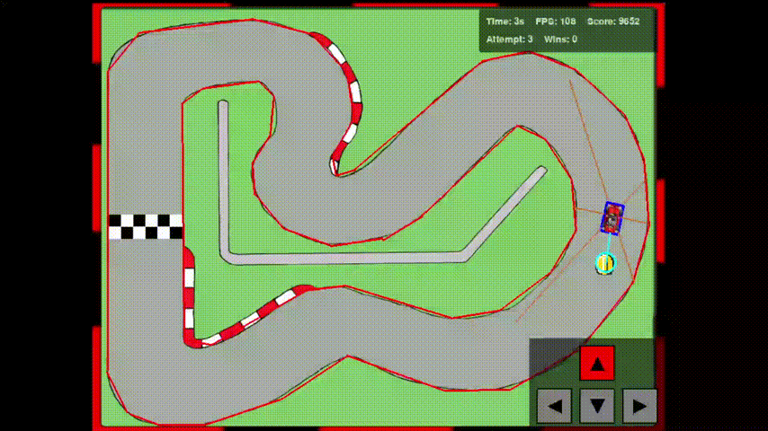
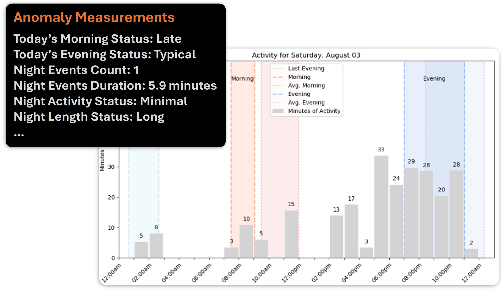
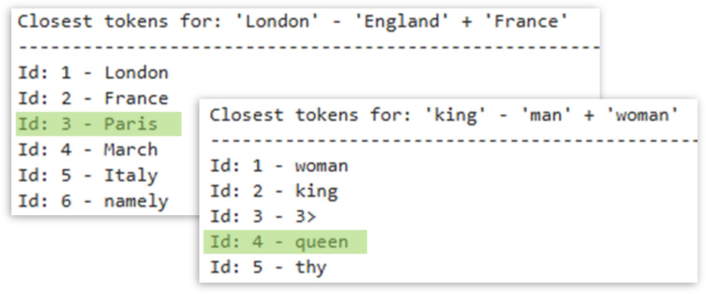

Some Code I've Written

RL Benchmarking Gym
Built a super clean and hackable RL engine from scratch to implement and ablate RL algorithms from baseline to SoTA.

Dungeon Coder
Full-stack webapp combining various image generation and image-to-3D asset models to create custom assets you can place in interactive dungeons or 3D print. Includes a dungeon generator that turns a prompt into a 3D dungeon using classical algorithms + LLM agents.
Built with React + Three.js and uses self-hosted CV models.
Built with React + Three.js and uses self-hosted CV models.

Reinforcement Learning Driver
Created and optimized a racing game in Pygame and taught an RL agent to drive it using Double Q-learning.

Machine Learning Anomaly Detection
Developed a real-time, interpretable anomaly detection system over noisy time-series data using kernel ridge regression for a San Diego healthtech company.

Recreating Word2Vec
Recreated Word2Vec vector arithmetic entirely from scratch — from building a tokenizer to cleaning English Wikipedia and training an embedding model.
Some Blogs I've Written
- Why Pivot? My motivation for leaving finance, taking a gap year to study ML, and starting grad school.
- My Hours as an Investment Banking Analyst. I tracked hours during my 2 years in banking and made some neat charts.
- From Attention is All You Need to Llama 3. Technical overview of improvements to the decoder-only transformer used in Llama 3.
- Nvidia's Multi-Trillion Dollar Moat: Explained. A technically approachable answer to this big question.